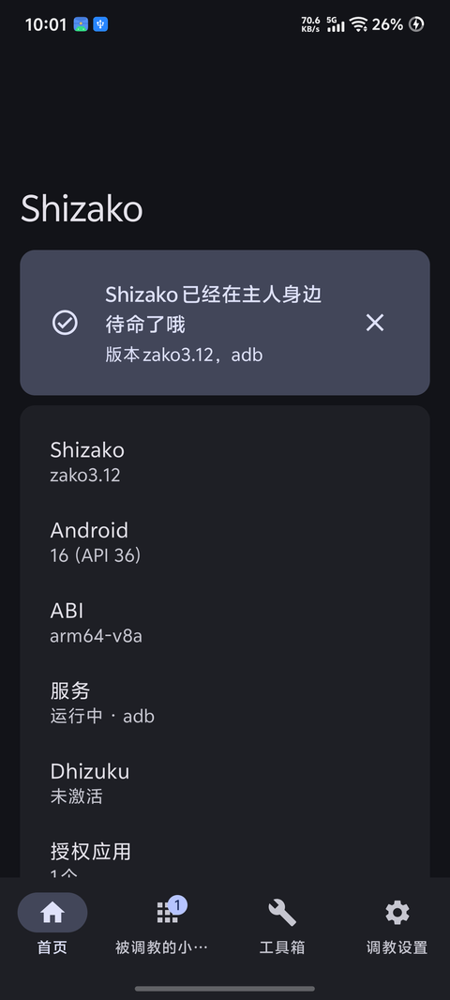

免 Root 特权
通过 ADB / 无线调试获得接近 Root 的能力 —— 不拆机、不刷机、不影响保修。
让猫耳看板娘替你「借」系统权限 —— 不 Root、不刷机
用 Root / 无线调试 / 电脑 ADB / Dhizuku 唤醒一个特权小进程，再把特权借给你信得过的应用。每个应用都要你亲自点头，随时收回。
Android 7.0+ · 无线调试激活需 Android 11+ · Apache-2.0
核心是一句话：把系统特权「借」给你信任的应用，而不是 Root 整台手机。
通过 ADB / 无线调试获得接近 Root 的能力 —— 不拆机、不刷机、不影响保修。
每个应用第一次连接都要你亲自授权，白名单本地记录，想收回随时收回。
用官方 Shizuku-API 写的应用一行代码都不用改就能连上她。
一键成为「设备所有者」，特权常驻、免 Root 免无线调试；Dhizuku-API 应用直接借用。
Root / 无线调试 / 电脑 ADB / Dhizuku 一页搞定，已配对可一键启动。
每次打开应用自动检查新版本，发现更新就地弹出可下载的对话框；网络拦截 GitHub 时自动切换可用源。
模块管理、Shell 控制台、无障碍管理器、一键注入、任务自动化广播。
玻璃拟态 / Material 3 两套风格一键切换，深浅色与动态取色全适配。
装好之后任选一种方式激活，之后就能开始给应用发通行证了。
Android 11+ 打开「无线调试」，在应用内扫码或配对即可。已配对过的话，重启后一键就能启动。
手边有电脑就行：把应用内给出的那条 adb 命令复制到电脑执行一次，没有版本限制。
已有 Root 环境（KernelSU / Magisk 等）直接唤醒，最省事的一条路。
在电脑执行一次 dpm set-device-owner 命令（设备上不能有账户），之后免 Root、免无线调试、特权和开机一起就位。
真机截图（vivo V2417A / Android 16，深色 + 玻璃风格）。

官方 dev.rikka.shizuku:api 写的应用（MT 管理器、冰箱、SystemUI Tuner 等）装好就能连：服务端只校验「是否请求了权限」，首次连接照样弹授权框。
被设为 Device Owner 后，Dhizuku-API 应用把 Shizako 当 Dhizuku 用；特权转发全部在 Shizako 进程内完成，不给第三方开系统 binder 后门。
按上游 Shizuku 的许可要求，本项目不使用上游的应用 ID 与权限名，改用 com.churan.shizako.permission.*。
内置兼容桥占用了官方 provider authority，因此两者同时安装会冲突。二选一即可。
不需要。无线调试或 USB 就能激活；有 Root 也可以，只是姿势更多。
兼容 Shizuku-API 生态 —— 用官方 SDK 写的应用零改动直连。按上游许可要求使用自己的包名与权限名，因此不能与官方版本共存。
每个应用都要你亲自点头才拿得到通行证，白名单本地记录、随时可收回；Dhizuku 特权转发也只在 Shizako 进程内完成。
Android 7.0 及以上；无线调试激活需要 Android 11+。
不收集。应用不上报任何使用数据；自动检查更新只请求 GitHub 的公开 release 接口，用来判断有没有新版本。
开源，Apache-2.0。克隆仓库后执行 ./gradlew :manager:assembleRelease 即可，需要 JDK 17+ 与 Android SDK 36。
下载安装，选一种姿势唤醒她 —— 然后就能开始给应用发通行证了。